DAY 1 — TOUCHDOWN
Welcome to Umerica
- Totally normal and not-extravagant airport pick up at LAX
- Possibly also normal and not-extravagant ride to Airbnb
- Rest / Korean Food / Nighttime Drive / Sleeping Next to You
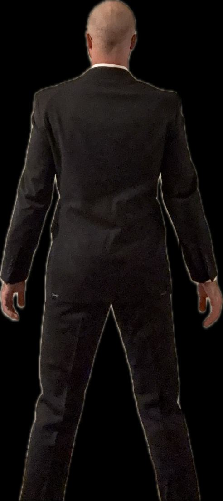
psst. it's always been you. 💌
A Complete Travel Guide
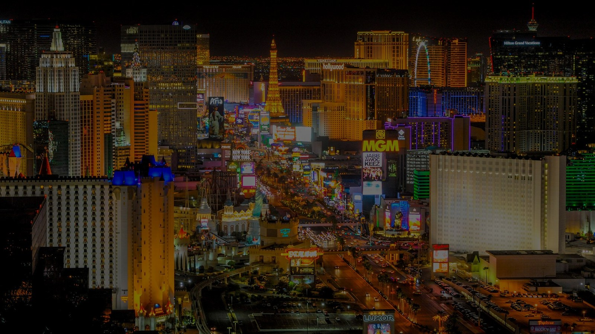
SHANGHAI ✈ LAS VEGAS
SHE LANDS IN...
Calculated live in Las Vegas, NV (PDT)
🎉 IT'S HAPPENING 🎉
DAY OF THE ADVENTURE:
—
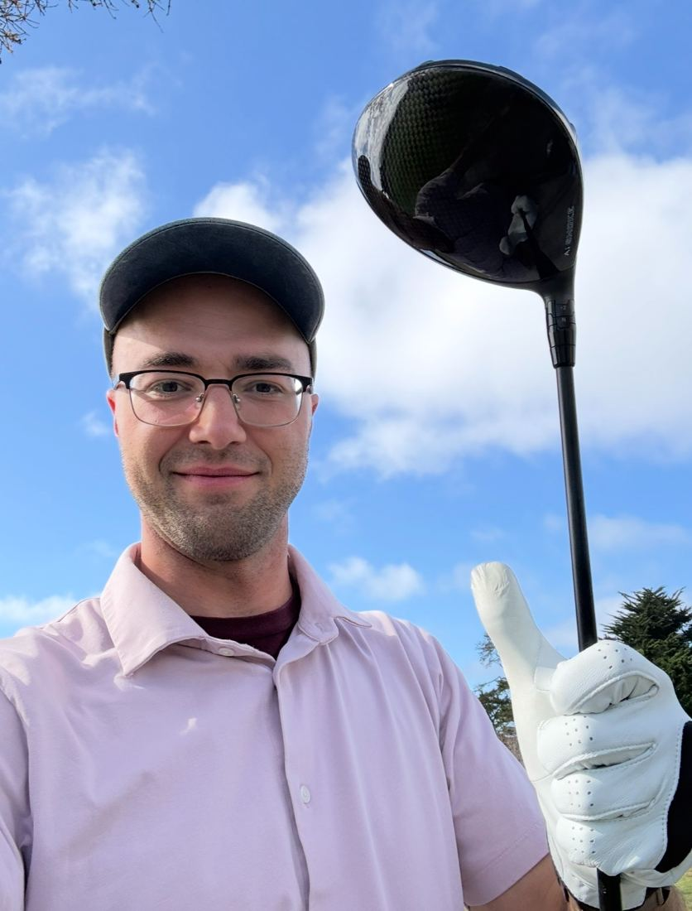
I'm Ready For You
SHE IS COMING
⚠ SYSTEM ERROR 0x1LU2U
Lol there's no error I just wanted to say I love you <3
13 years in the making, heavily weighted to the past ~3 months
Carter & Betty
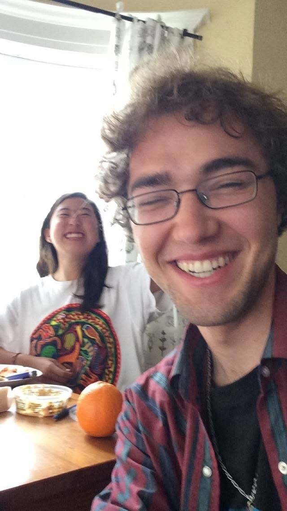
| Also known as | B+B, Umamiya & Upapitoya, Sweet Cheeks & Cocacho |
|---|---|
| Genre | Slow burn with explosive Second Act, Historical Drama, International Film |
| Origin | UC Berkeley Class of 2017 Facebook Page |
| First contact | Unit 1 - Cheney Elevator (I think) |
| Distance | 6,500 miles bridged through the magic of the internet that introduced them in the first place |
| Status | Stoked; Invigorated; Happy |
| Currently | Counting down to November 1, 2026 |
Carter and Betty met for the first time on Facebook.com. He wildly impressed her with his deep and esoteric knowledge of Japanese psychedelia and sad British music. She impressed him with her bold and strange manner of expressing sentences through the written & spoken word. She seemed fun and exciting and leveled with him in a way he hadn't really experienced before. They got close really quick and in retrospect, there was definitely some latent romantic tension. But the two danced around those feelings (and with each other) and called each other just friends.
THE DAILY CAL
Well they eventually made out and did a couple hand things, but this great release of years of tension didn't seem to shake out the way either had hoped. In fact it was a little awkward and they mutually agreed to just kinda keep hanging out as friends.
It seems that Betty and Carter's young hearts were star-crossed. After some growing distance, they shared a strained text exchange about smoking e-cigs through nostrils and didn't even know it would be "goodbye" for the next 7 years. Whether there were hard feelings between them or just something sad inside both of them, the world may never know.
7 years passed, but Carter found himself thinking often about Betty. There were words and jokes, places and people, all manner of reminders that would bring Betty back to his mind - but for no good reason at all, he never reached out to her. On the day Carter turned 30, Betty wished him a happy birthday over Instagram.com. They both happened to be in the same time zone, and after some brief texting they spoke on the phone while he was sitting in a treehouse-esque hotel sweaty in his boxers and she was super super high on the ganja. They spoke on the phone for approximately 3.5-4 hours and Carter was immediately reminded of how fun it was to talk to her. Hope had returned for the two to be in each other's lives again, but 7 years of no contact had left a massive gap to bridge. It would take another 14 months for things to really click.
Another chunk of time had passed them by. Carter was living in Las Vegas. Betty had just left her job of 3 years and found herself on the entrepreneurial path. By chance, Carter once again observed through Instagram.com that Betty was in the US - and not just any city in Umerica. She was in SAN DIGGY, CA where he would be traveling in a week's time. He reached out, and they made a plan to meet up. After some texts and a phone call, Carter felt a sort of tingly nervous excitement about seeing her - but when she suggested going to see Rosalia together and they discussed over the phone, those tingles turned into full on palpitations. It's like he had seen a vision of himself and Betty lighting a new spark, and it raised the stakes of their humble plan to see each other for the first time in 8 years. Maybe it was wish-casting, maybe it was true Oracular Power. But Carter suddenly knew that he was finally ready to fall in love with Betty.
When Betty and Carter met up for the 4th of July weekend in San Diggy, everything came together. Over the 8 years of minimal contact, Carter had somehow let himself lose sight of how fun and funny and eager and bold and beautiful and caked up and playful and sincere and charismatic and thrilling Betty was. Her laugh was everything. The way she looked in the waves of the pacific ocean while they talked about eyesight and family was like a dream, and when they were sleepily laying in the sand on the beach afterwards Carter felt a deep and irreversible "Uh Oh" kind of feeling that twisted up his insides in a way he hadn't felt in forever. The Rosalia concert that evening solidified that feeling and made his gut feeling a reality. From her strange and beautiful and kinda hot outfit, to her laughter leading him all across Pechanga Arena, to the pure awe of seeing Rosalia perform next to her, to her linking arms with him in the stairwell and him gently pushing her along towards front of the stadium, to them standing side by side mere feet away from Rosalia, hovering around each other all night, dancing around a certain that was so familiar yet also so new and utterly exhilarating - all of it drove him completely fuckin crazy. The next day, she spent all day with him and his family and somehow made the feeling of home and family way more fun and real and important. That day, Carter decided - he wanted this girl in his life forever, immediately.
Well we know what happened from there. I mean kinda - it still feels absolutely and totally insane. I tried counting how many hours we've spent on the phone/Instagram Phone, how many texts we've sent each other, how many photos we've sent each other...and I discovered that it's a lot. I couldn't get enough of you, and I still can't. You make everything feel more real, more important, more beautiful. You make me feel more me, and you you've shattered everything I thought I wanted or I thought I could achieve in life. I want you, really nothing else at this point, and I can't believe you get to be here with me for so long.
I love you so much Betty.
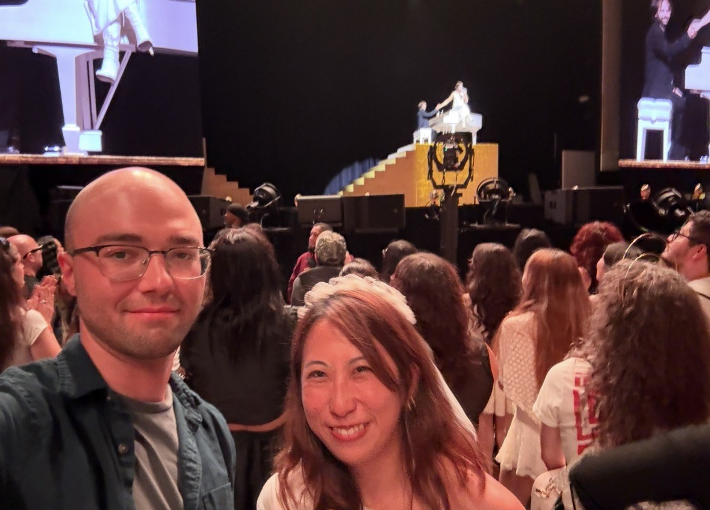
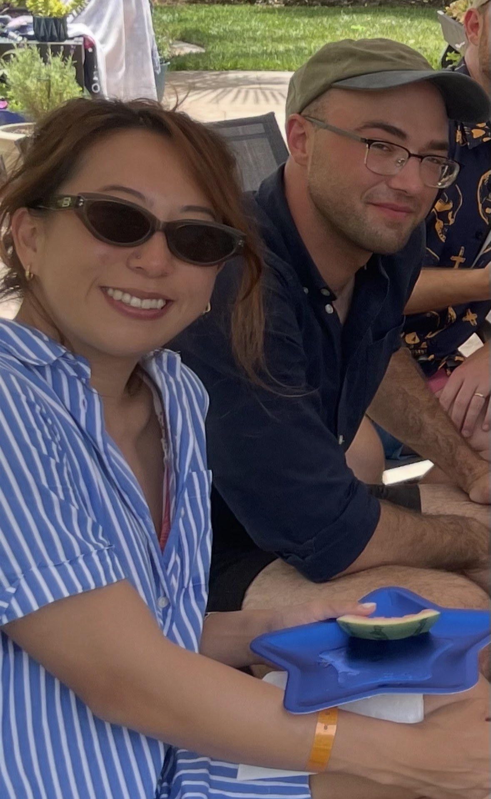
POP QUIZ: How Well Do You Know The Author of This Website?
What is Carter definitely NOT doing right now?
try using the code on the countdown page
A rough outline of what to do and where to go and who to see
DAY 1 — TOUCHDOWN
Los Angeles to Vegas
Deeper into Vegas
Meet the Homies
Domestic Living: B+B Style
Getting Ready for the California Tour
Thanksgiving Week
Remaining Weeks
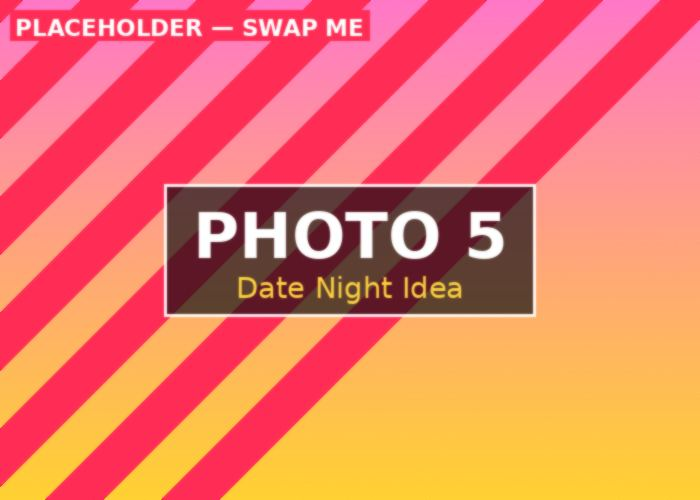
BONUS
Pull the lever for a fresh idea on what to do next. It's rigged like a normal slot machine but only gives goods answers.
A semi-comprehensive list of things to do in & around Las Vegas
tap the bowl
pull the lever
Everything you need to be ready for living La Vida Las Vegas
[PLACEHOLDER: caption]
the code starts with ↑ ↑ ↓ ↓
A working list of everything Carter needs to get done before Betty's arrival
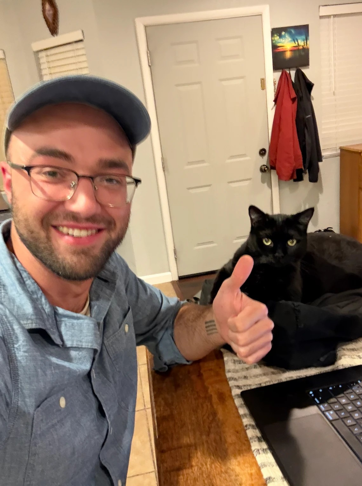
Carter, working on this website
0 / 12 done - no pressure but maybe also a little pressure
Enter the code on the countdown page!
A purely AI-generated history of Las Vegas with a Very Special Pop Quiz to test ur knowledge
Las Vegas officially became a town on May 15, 1905, when 110 acres of land next to the railroad tracks were auctioned off in the Nevada desert. Water from natural artesian springs was the actual reason anyone stopped here at all, long before neon and slot machines entered the picture. Yes, Vegas started as a place people stopped for water. The irony of this fact, given growing concerns with water access, is not lost on the AI-assisted author of this history page.
Nevada legalized casino gambling in 1931 - the same year construction began on the Hoover Dam nearby. Thousands of dam workers needed somewhere to spend their paychecks, and Vegas, ever the opportunist, obliged. This is the actual origin of Vegas-as-playground: a massive infrastructure project next door with a very bored, well-paid workforce.
Organized crime money built much of the early Strip. Bugsy Siegel's Flamingo Casino is the most famous example: mob-financed, glamorous, and reportedly so over budget that it may have contributed to Siegel's own demise in 1947. For decades after, mob-linked money quietly financed casino after casino, skimming profits off the top in cash before anyone noticed. It's less gangster movie glamor and more extremely aggressive small business ownership with a very classic American style glamor.
Frank Sinatra, Dean Martin, Sammy Davis Jr., Peter Lawford, and Joey Bishop turned the Sands Hotel into the coolest room on Earth, performing loose, improvised shows together and cementing Vegas as the place for entertainment, not just gambling. This is also the era that gave Vegas its "Rat Pack tuxedo and a martini" image.
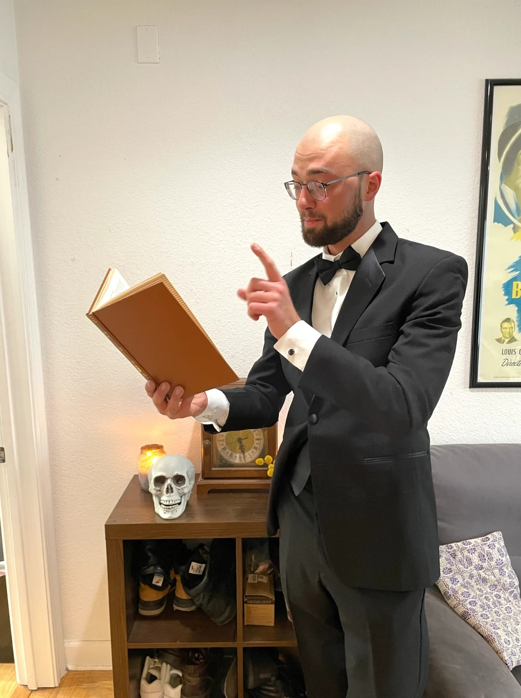
Reclusive billionaire Howard Hughes moved into the top floor of the Desert Inn in 1966 and, when asked to leave, simply bought the hotel instead. He went on to buy several more Vegas properties, helping shift ownership away from mob syndicates toward corporations - a trend Nevada formalized with 1969 legislation making it easier for public companies to own casinos. Boring on paper, but it's genuinely the reason Vegas became a "real" commercial center instead of a massive laundering operation.
Steve Wynn's Mirage opened in 1989 with an erupting volcano out front, kicking off the megaresort era: Excalibur, Luxor, MGM Grand, and Bellagio all followed within a decade. Vegas rebranded itself as a family destination in the early '90s - there were roller coasters marketed to children next to the casino floor - before quietly going back to being targeted mostly towards adults.
As casinos got renovated or imploded (a real Vegas pastime - implosions are big events in town), their iconic neon signs didn't just vanish. Many were rescued and now live at the Neon Museum's "Neon Boneyard," an outdoor graveyard of glowing Vegas history you can tour at night, when the restored signs light back up. It's part museum, part beautiful junkyard, and we should go with Parker, Anna, & Cous Cous.
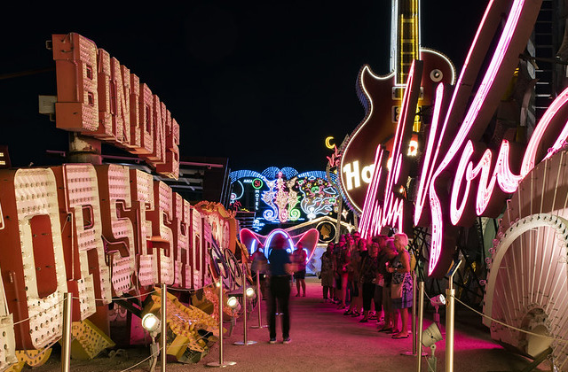
Modern Las Vegas pulls in tens of millions of visitors annually, has reinvented itself as a major sports town (Golden Knights, Raiders, and A's), and somehow still finds room for a giant sphere-shaped video screen in the middle of the city. It remains, as it has been for over a century, a town built entirely on giving people a very good excuse to leave their normal life for a few days to a few months. Which, as it so happens, is exactly what Betty is about to do.
Get all 5 right for a very special reward.
You unlocked a secret room. Please take a step into THE DINER.
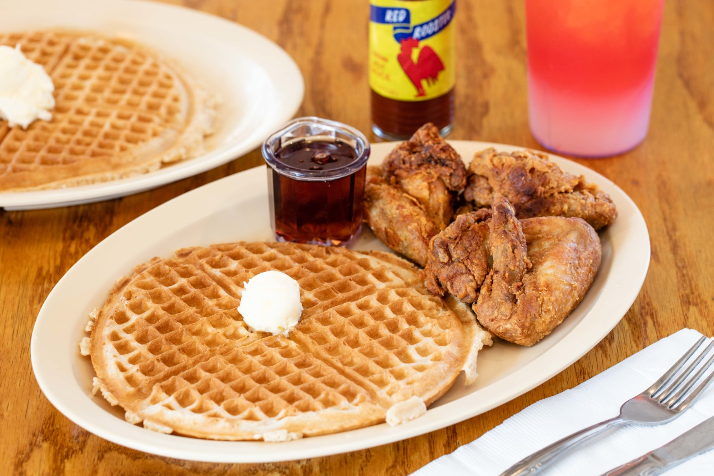
JACKPOT BANANA BONUS ROOM
it is banana time
You have punched through every wall around me, including the walls guarding the banana room of my heart. This sacred space represents all the crazy feelings of excitement and wonder and high blood pressure and pure joy we are capable of making each other feel. Please take as many bananas as u want b.
Love, Carter
See if you can get to 500
Bananas Collected: 0
Click a tower to knock some bananas loose
Clicks: 0